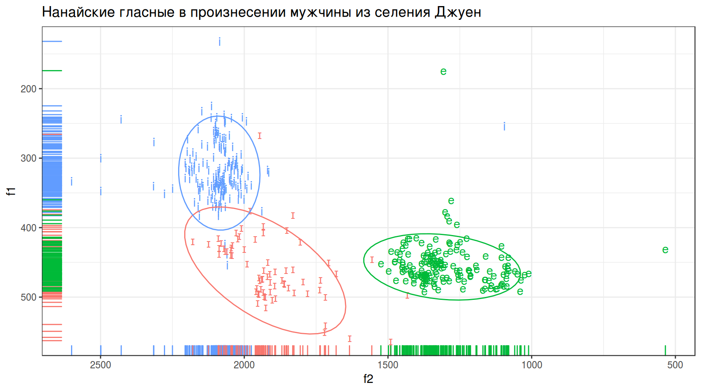
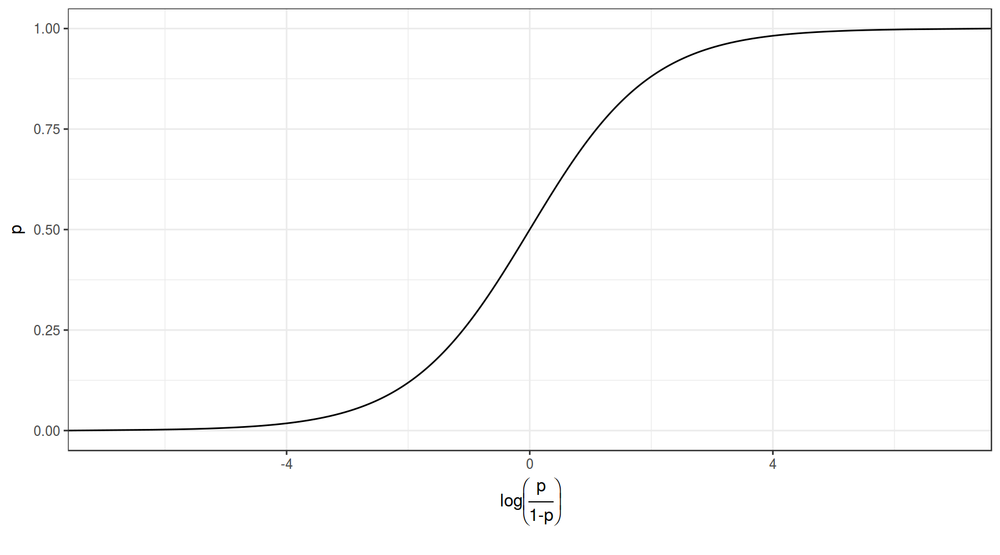
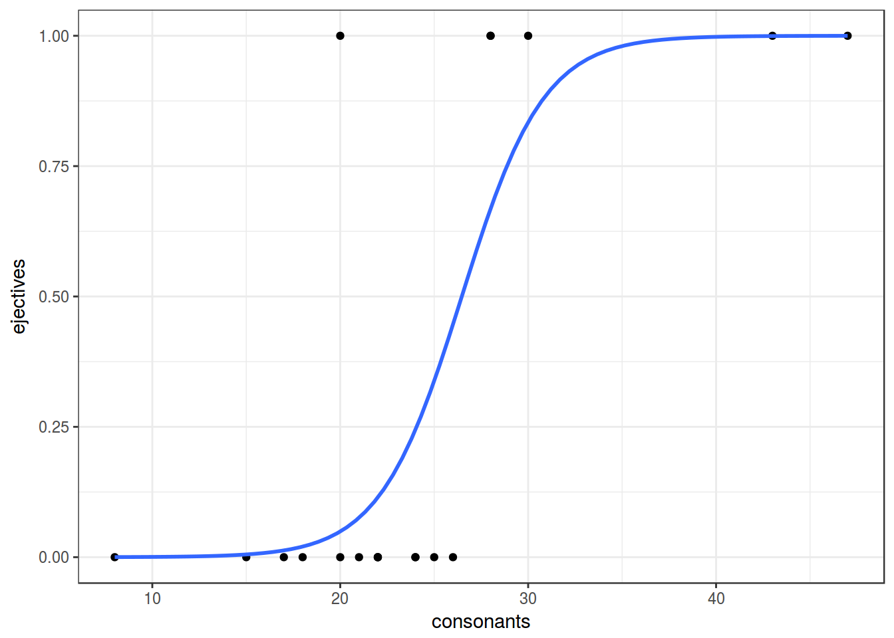

- Логистическая и мультиномиальная регрессия
Г. Мороз
0. Введение
Логистическая (logit, logistic) и мультиномиальная (multinomial) регрессия применяются в случаях, когда зависимая переменная является категориальной:
- с двумя значениями (логистическая регрессия)
- с более чем двумя значениями (мультиномиальная регрессия)
0.1 Библиотеки
library(tidyverse)0.2 Количество согласных и абруптивные звуки
В датасет собрано 19 языков, со следующими переменными:
- language — переменная, содержащая язык
- ejectives — бинарная переменная, обозначающая наличие абруптивных (“yes”/“no”)
- consonants — переменная, содержащая информацию о количестве согласных
- vowels — переменная, содержащая информацию о количестве гласных
ej_n_cons <- read.csv("https://goo.gl/DsRMve")
ej_n_cons %>%
ggplot(aes(ejectives, consonants, fill = ejectives, label = language))+
geom_boxplot(show.legend = FALSE)+
geom_jitter() +
theme_bw() ->
ej_n_cons_plot
plotly::ggplotly(ej_n_cons_plot, tooltip = c("label"))1. Логистическая регрессия
Мы хотим чего-то такого: \[\underbrace{y}_{[-\infty, +\infty]}=\underbrace{\mbox{β}_0+\mbox{β}_1\cdot x_1+\mbox{β}_2\cdot x_2 + \dots +\mbox{β}_k\cdot x_k +\mbox{ε}_i}_{[-\infty, +\infty]}\] Вероятность — (в классической статистике) отношение количества успехов к общему числу событий: \[p = \frac{\mbox{# успехов}}{\mbox{# неудач} + \mbox{# успехов}}, \mbox{область значений: }[0, 1]\] Шансы — отношение количества успехов к количеству неудач: \[odds = \frac{p}{1-p} = \frac{p\mbox{(успеха)}}{p\mbox{(неудачи)}}, \mbox{область значений: }[0, +\infty]\] Натуральный логарифм шансов: \[\log(odds), \mbox{область значений: }[-\infty, +\infty]\]
Но, что нам говорит логарифм шансов? Как нам его интерпретировать?
data_frame(n = 10,
success = 1:9,
failure = n - success,
prob.1 = success/(success+failure),
odds = success/failure,
log_odds = log(odds),
prob.2 = exp(log_odds)/(1+exp(log_odds)))Как связаны вероятность и логарифм шансов: \[\log(odds) = \log\left(\frac{p}{1-p}\right)\] \[p = \frac{\exp(\log(odds))}{1+\exp(\log(odds))}\]
Как связаны вероятность и логарифм шансов:
data_frame(p = seq(0, 1, 0.001),
log_odds = log(p/(1-p))) %>%
ggplot(aes(log_odds, p))+
geom_line()+
labs(x = latex2exp::TeX("$log\\left(\\frac{p}{1-p}\\right)$"))+
theme_bw()
1.1 Почему не линейную регрессию?
lm_0 <- lm(as.integer(ejectives)~1, data = ej_n_cons)
lm_1 <- lm(as.integer(ejectives)~consonants, data = ej_n_cons)
lm_0##
## Call:
## lm(formula = as.integer(ejectives) ~ 1, data = ej_n_cons)
##
## Coefficients:
## (Intercept)
## 1.316lm_1##
## Call:
## lm(formula = as.integer(ejectives) ~ consonants, data = ej_n_cons)
##
## Coefficients:
## (Intercept) consonants
## 0.4611 0.0353Первая модель: \[ejectives = 1.316 \times consonants\] Вторая модель: \[ejectives = 0.4611 + 0.0353 \times consonants\]
ej_n_cons %>%
ggplot(aes(consonants, as.integer(ejectives)))+
geom_point()+
geom_smooth(method = "lm")+
theme_bw()+
labs(y = "ejectives (yes = 2, no = 1)")
1.2 Логит: модель без предиктора
Будьте осторожны, glm не работает с тибблом.
logit_0 <- glm(ejectives~1, family = "binomial", data = ej_n_cons)
summary(logit_0)##
## Call:
## glm(formula = ejectives ~ 1, family = "binomial", data = ej_n_cons)
##
## Deviance Residuals:
## Min 1Q Median 3Q Max
## -0.8712 -0.8712 -0.8712 1.5183 1.5183
##
## Coefficients:
## Estimate Std. Error z value Pr(>|z|)
## (Intercept) -0.7732 0.4935 -1.567 0.117
##
## (Dispersion parameter for binomial family taken to be 1)
##
## Null deviance: 23.699 on 18 degrees of freedom
## Residual deviance: 23.699 on 18 degrees of freedom
## AIC: 25.699
##
## Number of Fisher Scoring iterations: 4logit_0$coefficients## (Intercept)
## -0.7731899table(ej_n_cons$ejectives)##
## no yes
## 13 6log(6/13) # β0## [1] -0.77318996/(13+6) # p## [1] 0.3157895exp(log(6/13))/(1+exp(log(6/13))) # p## [1] 0.31578951.3 Логит: модель c одним числовым предиктором
logit_1 <- glm(ejectives~consonants, family = "binomial", data = ej_n_cons)
summary(logit_1)##
## Call:
## glm(formula = ejectives ~ consonants, family = "binomial", data = ej_n_cons)
##
## Deviance Residuals:
## Min 1Q Median 3Q Max
## -1.08779 -0.49331 -0.20265 0.02254 2.45384
##
## Coefficients:
## Estimate Std. Error z value Pr(>|z|)
## (Intercept) -12.1123 6.1266 -1.977 0.0480 *
## consonants 0.4576 0.2436 1.878 0.0603 .
## ---
## Signif. codes: 0 '***' 0.001 '**' 0.01 '*' 0.05 '.' 0.1 ' ' 1
##
## (Dispersion parameter for binomial family taken to be 1)
##
## Null deviance: 23.699 on 18 degrees of freedom
## Residual deviance: 12.192 on 17 degrees of freedom
## AIC: 16.192
##
## Number of Fisher Scoring iterations: 6logit_1$coefficients## (Intercept) consonants
## -12.1123347 0.4576095ej_n_cons %>%
mutate(ejectives = as.integer(ejectives)-1) %>%
ggplot(aes(consonants, ejectives)) +
geom_point()+
theme_bw()+
geom_smooth(method = "glm",
method.args = list(family = "binomial"),
se = FALSE)
Какова вероятность, что в языке с 29 согласными есть абруптивные?
logit_1$coefficients## (Intercept) consonants
## -12.1123347 0.4576095\[\log\left({\frac{p}{1-p}}\right)=\beta_0+\beta_1\times consinants\] \[\log\left({\frac{p}{1-p}}\right)=-12.1123347 + 0.4576095 \times 29 = 1.158341\] \[p = \frac{e^{1.158341}}{1+e^{1.158341}} = 0.7610311\]
# log(odds)
predict(logit_1, newdata = data.frame(consonants = 29))## 1
## 1.158341# p
predict(logit_1, newdata = data.frame(consonants = 29), type = "response")## 1
## 0.76103122. Мультиномиальная регрессия